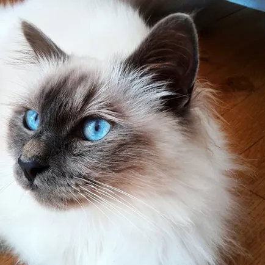
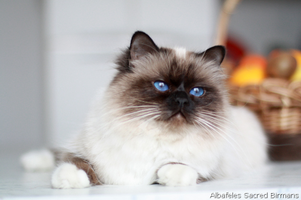
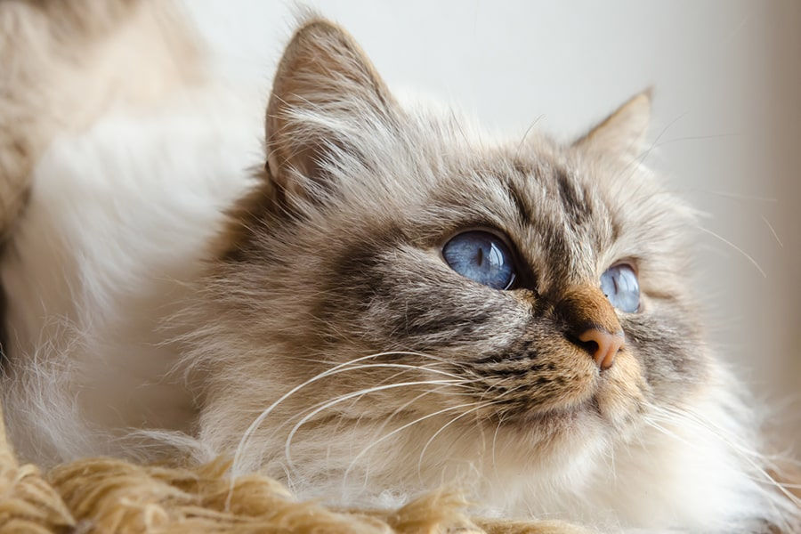
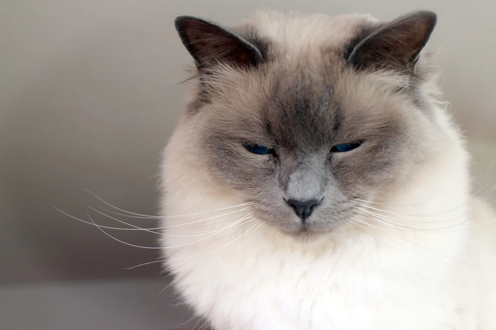
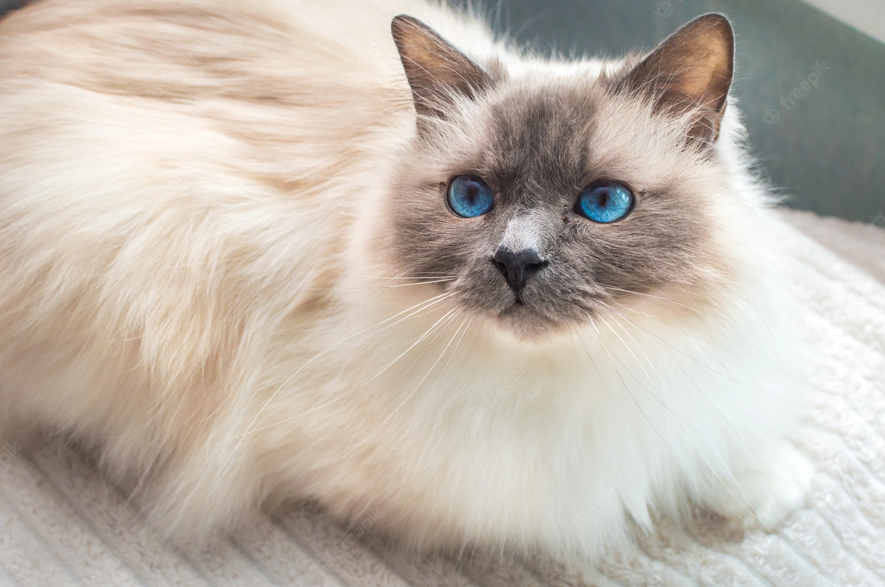

Giulia Chironna / Getty ImagesBirmans are another color-pointed cat like the Siamese and ragdoll. They have blue eyes and a medium-long coat but no undercoat, the primary trait that sets them apart from Persians and Himalayans. Birmans were the original stock for breeding ragdolls, so they look very similar, but they have slightly different markings and personalities. They are fun, social cats that love attention—from their chosen person. They are more of a one-person cat than others.
Breed Overview
HEIGHT: 8 to 10 inches
WEIGHT 6 to 15 pounds
COAT AND COLOR: Long and silky coat in seal, blue, red, chocolate, cream, and tortie colors, including standard or lynx pattern points and deep blue eyes
LIFE EXPECTANCY: 15 to 20 years
more image:
 

 